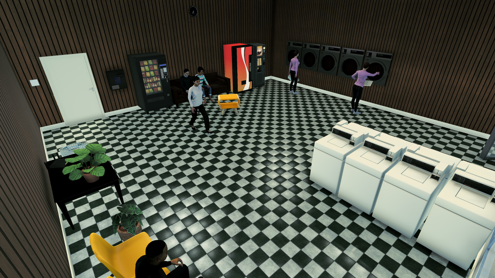
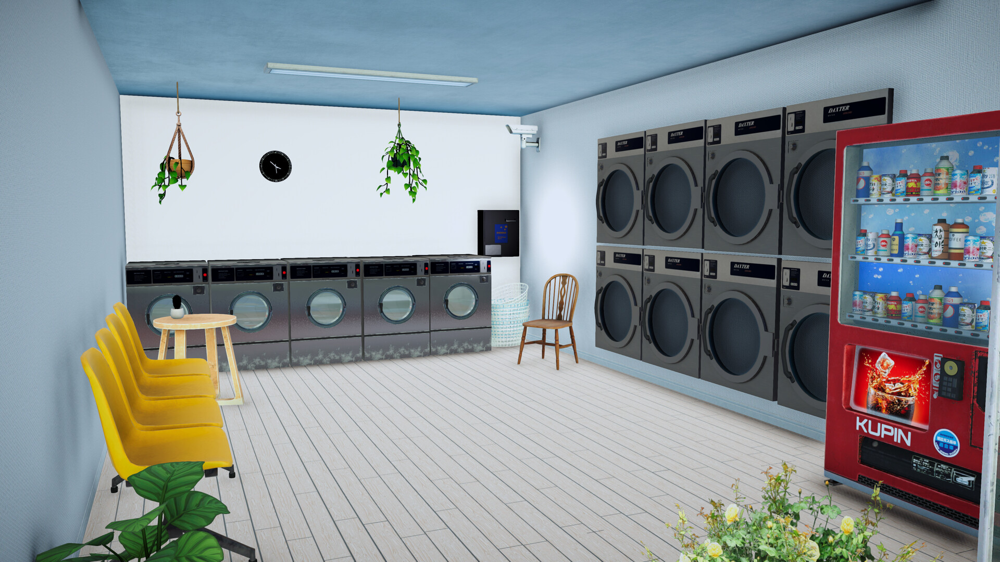
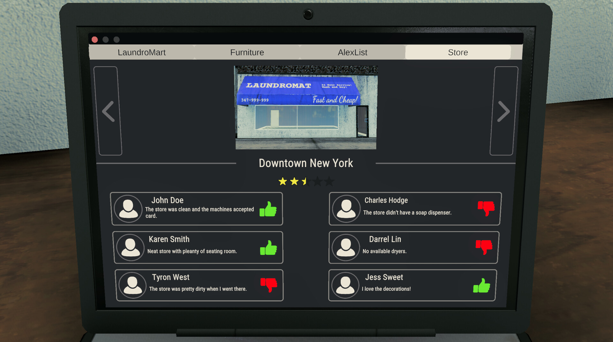
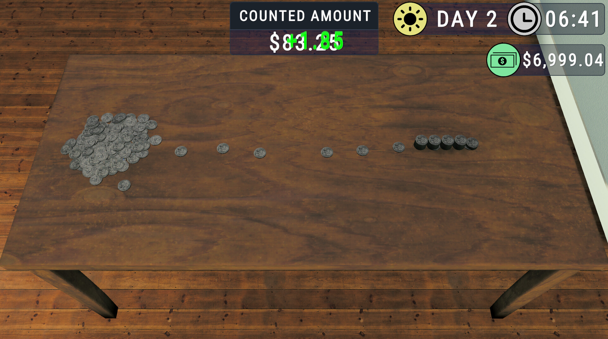

LAUNDROMAT SIMULATOR
A management/simulator game where you run multiple laundromats.
Overview
Laundromat Simulator was made by a two-man team over six months. You run a laundromat out of New York, and can eventually expand to multiple other locations, and must manage the operation and reputation of each location.

Contributions
Since we only had two people working on Laundromat Simulator, and it was very involved programmatically, I ended up doing pretty much everything you can think of while my colleague handled the programming. I did a lot of 3D modelling and texturing for all the different washers and dryers in the store, as well as baking some blender animations that would show the player pouring the coins from the machines into the bucket.
One of the hardest things to do for Laundromat Sim was creating the tutorial, it ended up being pretty complex and requiring a lot of coordination between different systems to work. I probably spent a few weeks alone doing just the tutorial.
Other things I did on this project include:
- Created the different maps.
- Created all the back end data for all items, and added all items to the game.
- Created all the Steam Store page assets and trailer.
- Managed the Steamworks setup and steam deployment.
Screenshots


